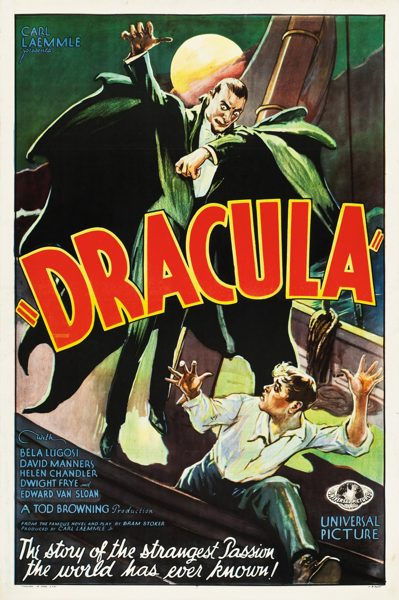

Dracula

Starring: Bela Lugosi, Helen Chandler, David Manners
Director: Tod Browning, Karl Freund
Writer: Garrett Fort, John L. Balderston, Tod Browning
Producer: Carl Laemmle Jr., Tod Browning
Dracula is a 1931 American pre-Code vampire film directed and co-produced by Tod Browning from a screenplay written by Garrett Fort and starring Bela Lugosi in the title role. It is based on the 1924 stage play Dracula by Hamilton Deane and John L. Balderston, which in turn is adapted from the 1897 novel Dracula by Bram Stoker.
Trivia
- Based on Dracula (1897 novel by Bram Stoker).
- Based on Dracula (1924 stage play).
- Stoker's widow sued for plagiarism and copyright infringement, and the courts decided in her favor, essentially ordering that all prints of Nosferatu be destroyed.
- Universal Pictures paid $40,000 for all rights to the novel and the stage plays, so they would have the exclusive rights to the Dracula character.
- Universal also brought Pulitzer Prize-winning novelist Louis Bromfield to pen the script to fit this grand-scale vision.
Previous Showings
7 Runs • 6 Festivals
Original Billings: 1 run (July 11, 1931)
Original Run: July 11, 1931 (Saturday)
All runs on record (7):
- July 11, 1931 (Saturday)Bela Lugosi
- November 18 - 19, 2000Horror Programw/ The Mummy
- September 22 - 23, 2012UNIVERSAL PICTURES Part 1: 1930-1935w/ The Old Dark House
- September 13 - 14, 2014Summer 2014w/ The Black Cat
- July 1 - 3, 2015Summer 2015: Forty Classics from the Golden Age, including Kurosawa in Augustw/ The Old Dark House
- October 31 - November 1, 2019UNIVERSAL PICTURES 1931-1935w/ The Black Cat
- October 21 - 22, 2023Universal Pictures: Horror and Morew/ Dracula's Daughter